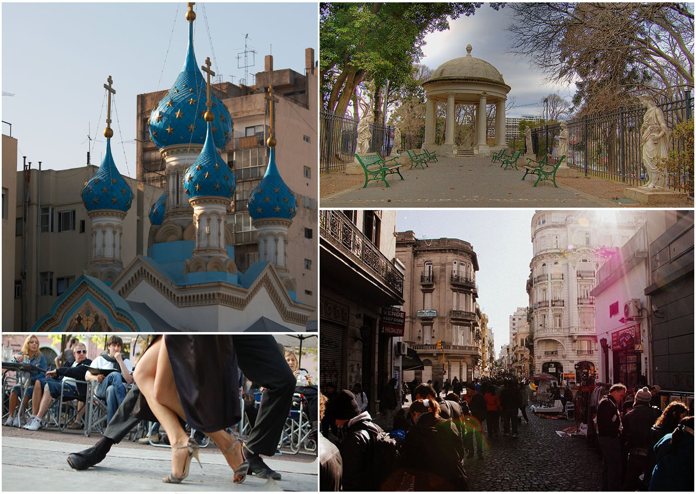

Alicia Dubois creció en Lyon, una ciudad llena de historia y cultura en el corazón de Francia. Desde muy joven, mostró un gran interés por la literatura y los idiomas, lo que la llevó a estudiar Lingüística y Literatura Comparada en la Universidad de "la Sorbona" en París. Durante sus estudios, Alicia participó en varios programas de intercambio que la llevaron a viajar por Europa, Asia y América del Norte, alimentando su pasión por descubrir nuevas culturas y formas de vida.
Después de graduarse, Alicia decidió tomarse un año sabático para explorar el mundo. Comenzó su aventura en Marruecos, donde se enamoró de los vibrantes mercados y la rica gastronomía. Desde allí, continuó hacia India, sumergiéndose en la espiritualidad de los ashrams y la majestuosidad del Taj Mahal. Sus viajes la llevaron también a Japón, donde estudió caligrafía y participó en ceremonias de té tradicionales, y a Brasil, donde aprendió capoeira y se dejó llevar por la alegría del Carnaval.
En 2015, después de años de viaje, Alicia llegó a Argentina, un país que la cautivó con su mezcla única de influencias europeas y latinas. Decidió establecerse en Buenos Aires, donde encontró un hogar en el barrio de San Telmo, famoso por su arquitectura histórica y sus animados mercados de antigüedades.
En Buenos Aires, Alicia trabajó como profesora de francés y traductora, utilizando su experiencia lingüística para conectar a personas de diferentes culturas. También comenzó a escribir un blog sobre sus experiencias de viaje, compartiendo historias y consejos con una audiencia global. Su amor por la música y la danza la llevó a aprender tango, y pronto se convirtió en una apasionada bailarina.
Alicia se ha integrado plenamente en la vida cultural de Argentina, participando en festivales de cine, conciertos y talleres de escritura. A pesar de estar lejos de su país natal, siente que ha encontrado una segunda patria en Argentina, donde cada día es una nueva aventura.